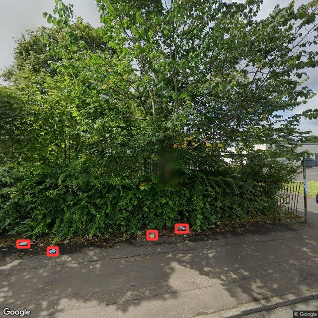
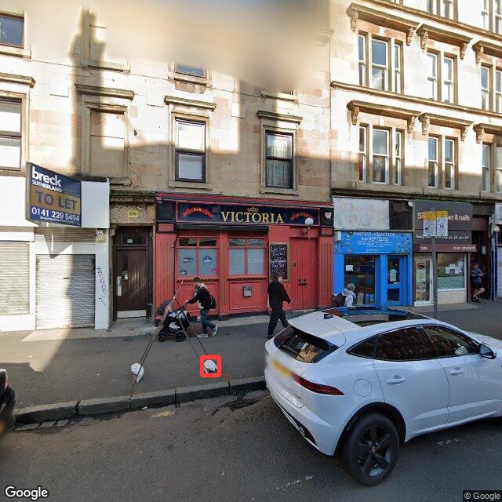

Regressing Litter on Deprivation in Glasgow City with Object
Detection
Gary Blackwood
Questions of Interest
-
Is there a relationship between deprivation and litter in Glasgow
City?
-
How successfully can object detection be used as an automated
approach to quantifying litter?
Detection Results

